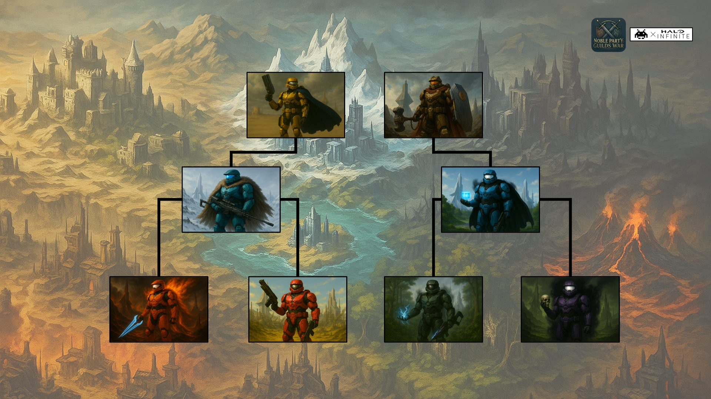
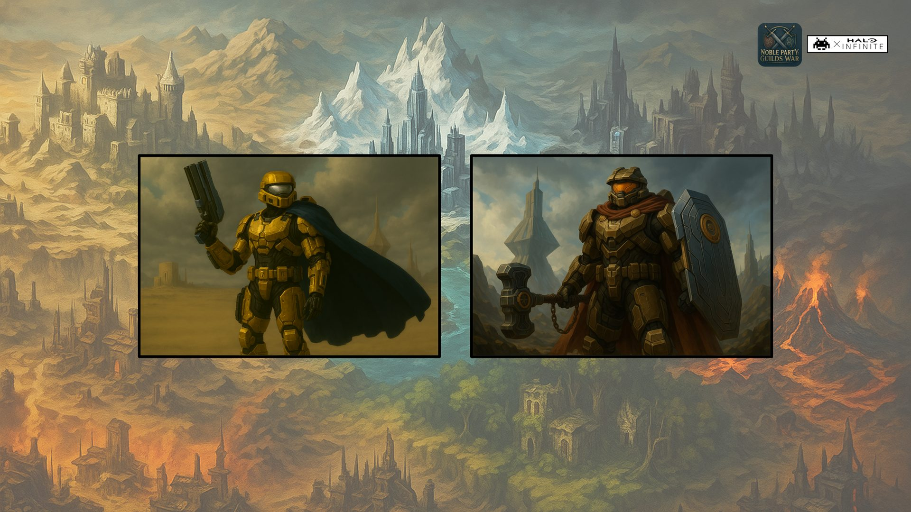
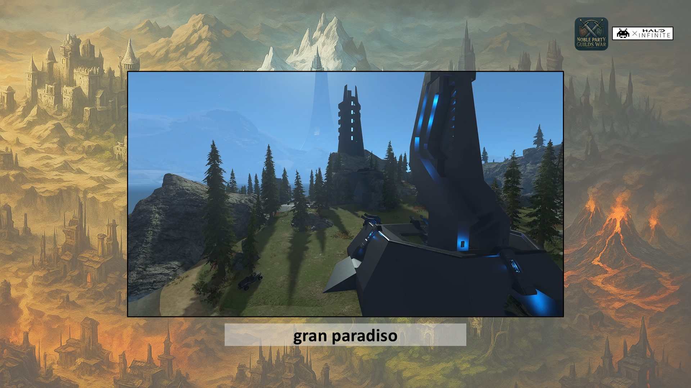
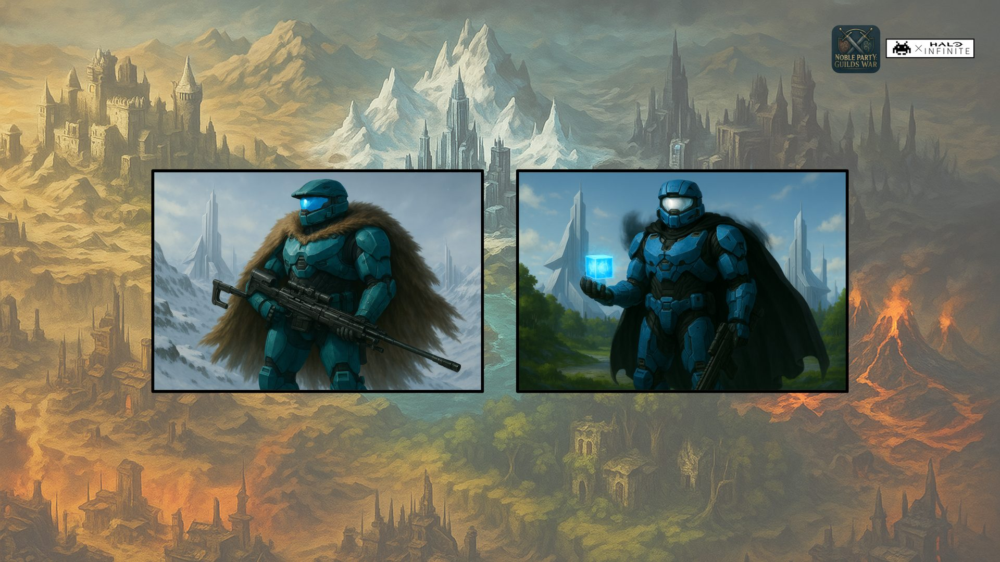
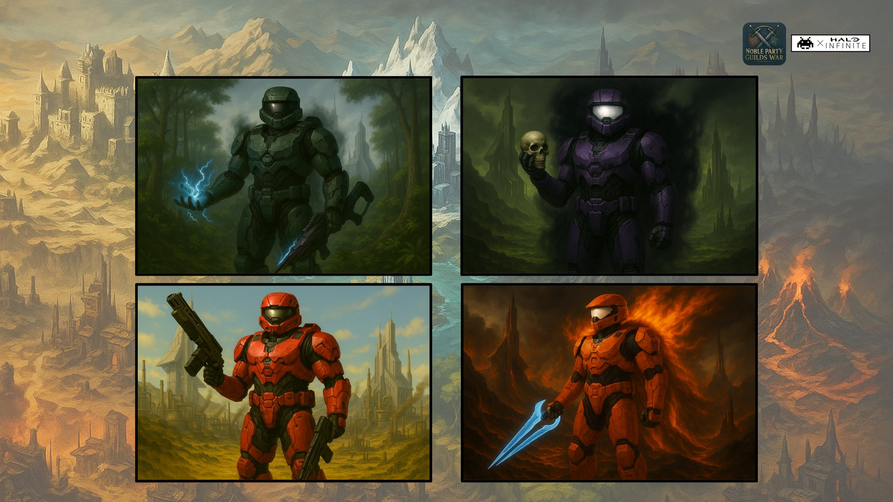
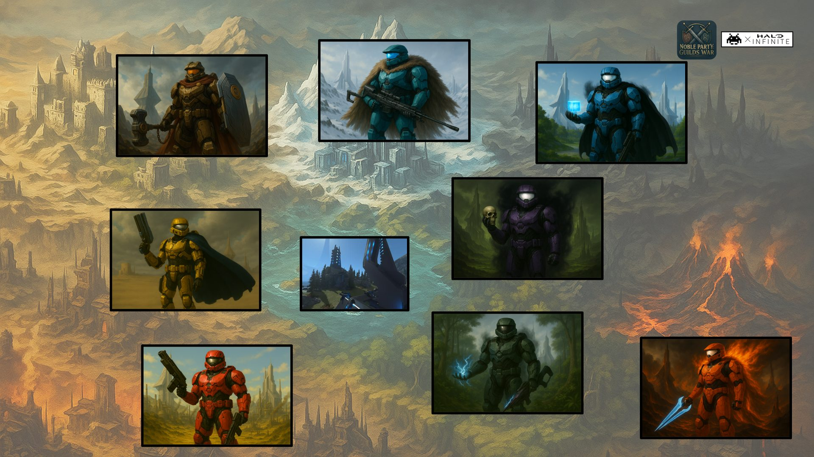

Lore
La storia dietro l'evento che spiega i Capitoli Ufficiali del Campionato. The story behind the event, explaining the Championship's Official Chapters. [Torna alla Home][Back to Home]
❮

La storia dietro l'evento che spiega i Capitoli Ufficiali del Campionato. The story behind the event, explaining the Championship's Official Chapters. [Torna alla Home][Back to Home]
Il cielo di Gran Paradiso ardeva di bagliori rossi e arancioni,
mentre le ombre lunghe della sera si distendevano come mani affamate sulle colline.
L'aria era densa di polvere, fumo e sangue; il vento portava con se l'eco spezzata delle urla che,
solo poco prima,
avevano incendiato il campo di battaglia. Ora, il silenzio cadeva come un sudario,
interrotto soltanto dal crepitio lontano di armi ancora incandescenti.
The sky over Gran Paradiso burned with red and orange light, while the long shadows of evening stretched like hungry hands across the hills. The air was thick with dust, smoke and blood; the wind carried with it the broken echo of the screams that, only moments before, had set the battlefield alight. Now silence fell like a shroud, broken only by the distant crackle of weapons still white-hot.
Varkas, il possente Signore della Gilda Bastione,
strisciava sul terreno fradicio di pioggia e sangue.
Il suo corpo, un tempo baluardo inamovibile,
ora era piegato e segnato da ferite profonde.
Ogni movimento era un tormento, ogni respiro un colpo di lama.
Il mondo attorno a lui vacillava,
ma la sua volontà restava incatenata a un unico scopo: raggiungere suo fratello.
Varkas, the mighty Lord of the Bastione Guild, crawled across ground soaked with rain and blood. His body, once an immovable bulwark, was now bent and marked by deep wounds. Every movement was torment, every breath a blade's blow. The world around him swayed, but his will stayed chained to a single purpose: to reach his brother.
Poco più avanti, tra corpi senza vita e vessilli strappati dal vento,
giaceva Serafin, capo della Gilda Valore,
immobile, con lo sguardo fisso verso un cielo che non guardava più.
Mentre Varkas si avvicinava, qualcosa attirò il suo sguardo - e il suo cuore si spezzò.
A little further on, among lifeless bodies and banners torn by the wind, lay Serafin, head of the Valore Guild, motionless, his gaze fixed on a sky he no longer saw. As Varkas drew closer, something caught his eye - and his heart broke.
Aurion. Suo figlio. L'orgoglio della sua stirpe.
Era disteso a terra, il volto sereno come se stesse dormendo.
Ma non respirava più. Dalla terra, liane vive e oscure lo avvolgevano,
intrecciandosi attorno al suo corpo.
In un silenzio innaturale, lo trascinavano verso il sottosuolo.
Aurion. His son. The pride of his bloodline. He lay on the ground, his face serene as if asleep. But he was no longer breathing. From the earth, living dark vines wrapped around him, coiling about his body. In an unnatural silence, they dragged him down into the ground.
Gran Paradiso reclamava la sua carne e la sua anima,
come aveva fatto con troppi quella notte maledetta.
Varkas cercò di gridare, ma dalla sua gola uscì soltanto un rantolo. claimed his flesh and his soul, as it had done with too many that cursed night. Varkas tried to cry out, but only a rattle escaped his throat.
Raggiunse infine Serafin. Il volto del fratello era pallido,
gli occhi velati dalla nebbia dell'ultimo istante.
Varkas si lasciò cadere accanto a lui, il sangue mischiandosi al sangue.
Con voce rotta, quasi un sussurro, parlò:
At last he reached Serafin. His brother's face was pale, his eyes veiled by the mist of the final instant. Varkas let himself fall beside him, blood mingling with blood. In a broken voice, almost a whisper, he spoke:
"Non so... non so perché siamo arrivati fino a questo, fratello.
Non so come il nostro cammino sia degenerato fino a questa... follia."I don't know... I don't know how we came to this, brother. I don't know how our path decayed into this... madness.
Serafin lo guardò, e per un attimo, nei suoi occhi opachi brillò
la scintilla di ciò che erano stati,
prima che il destino li piegasse. Le sue labbra si mossero lentamente:
Serafin looked at him, and for a moment, in his clouded eyes, there shone the spark of what they had been, before fate bent them. His lips moved slowly:
Se il multiverso ha scelto questo per noi... vuol dire che il nostro tempo è finito.
Che il nostro sacrificio servirà... da insegnamento... per chi verrà dopo.
Non c'è colpa, Varkas. Non c'è odio. Solo... il rimpianto di una guerra... che poteva essere evitata.
Ma... se il fato lo ha scritto... vuol dire che la verità più grande... non ci sarà mai concessa.
If the multiverse has chosen this for us... it means our time is over. That our sacrifice will serve... as a lesson... for those who come after. There is no blame, Varkas. There is no hatred. Only... the regret of a war... that could have been avoided. But... if fate wrote it... it means the greater truth... will never be granted to us.
Le sue parole si dissolsero nell'aria fredda, come fumo disperso dal vento.
His words dissolved into the cold air, like smoke scattered by the wind.
Varkas, esausto, si lasciò cadere accanto a lui.
I due fratelli rimasero così, fianco a fianco, guardando il cielo che lentamente si tingeva di nero.
Varkas, exhausted, let himself fall beside him. The two brothers stayed like that, side by side, watching the sky slowly turn black.
Gran Paradiso li accolse entrambi nel suo silenzio eterno. welcomed them both into its eternal silence.
Così si concluse la Prima Era delle Gilde. Un'epoca di gloria e sangue, cancellata in un'unica, irrimediabile notte.
So ended the First Age of the Guilds. An era of glory and blood, erased in a single, irreparable night.

Nel cuore primordiale del Multiverso, quando i cieli erano solcati da frammenti di mondi in collisione e gli oceani
ribollivano di energia caotica, nacque la stirpe degli
In the primordial heart of the Multiverse, when the skies were streaked with fragments of colliding worlds and the oceans boiled with chaotic energy, the bloodline of the Aetherium.
Essi non erano dèi, né semplici mortali: erano custodi, plasmati nella tempesta di ere dimenticate.
La loro essenza scaturiva dall’equilibrio stesso tra distruzione e rinascita, e il loro destino era
vegliare sul fragile intreccio di realtà che ancora cercavano forma.. They were not gods, nor mere mortals: they were keepers, shaped in the storm of forgotten ages. Their essence sprang from the very balance between destruction and rebirth, and their destiny was to watch over the fragile weave of realities still seeking form.
Da quella stirpe si levarono due figure, fratelli non solo di sangue ma di visione:
From that bloodline two figures rose, brothers not only in blood but in vision:
Serafin e Varkas.
Dalle loro scelte sarebbe dipeso il futuro di ogni cosa.. On their choices the future of everything would depend.
Serafin era una mente visionaria, architetto dell’ordine.
Nei suoi occhi brillava la convinzione che ogni conflitto fosse una tela da scolpire,
ogni scelta un tassello di un disegno più grande.
Calmo come le dune di un deserto eterno, sapeva tuttavia imporsi con la forza di un sole implacabile. was a visionary mind, an architect of order. In his eyes shone the conviction that every conflict was a canvas to be carved, every choice a piece of a greater design. Calm as the dunes of an eternal desert, he could nonetheless impose himself with the force of an implacable sun.
Varkas, al contrario, era un cuore di guerriero. Un bastione vivente,
temprato nel fuoco e nel clangore delle battaglie.
Non cercava gloria, ma resistenza: la sua arma era la difesa ostinata, il logoramento
paziente che conduce il nemico alla resa inevitabile.
Dietro lo scudo e il martello nascondeva un’anima fiera, capace di grande lealtà e
di profonda compassione per chi soffriva ingiustizia.
Se Serafin costruiva castelli di luce, Varkas innalzava rocche di pietra e silenzio., by contrast, was a warrior's heart. A living bastion, tempered in fire and the clash of battle. He did not seek glory, but endurance: his weapon was stubborn defense, the patient attrition that leads the enemy to inevitable surrender. Behind shield and hammer he hid a proud soul, capable of great loyalty and deep compassion for those suffering injustice. If Serafin built castles of light, Varkas raised fortresses of stone and silence.
Insieme, i due fratelli percorsero terre spezzate e mari infiniti, assistendo
al caos che divorava interi mondi.
Dove passavano, lasciavano segni di ordine e di protezione, ma ogni vittoria
portava con sé nuove domande: poteva davvero l’universo essere domato?
Together, the two brothers crossed broken lands and endless seas, witnessing the chaos devouring whole worlds. Where they passed, they left marks of order and protection, but every victory brought new questions with it: could the universe truly be tamed?
Alla fine, dinanzi all’abisso del nulla che minacciava di inghiottire tutto,
Serafin e Varkas fecero un giuramento.
Giurarono di piegare il caos, di erigere un nuovo equilibrio che nessuna
tempesta avrebbe potuto abbattere.
Un patto eterno che avrebbe legato famiglie, discendenze e ideali per generazioni.
In the end, before the abyss of nothingness that threatened to swallow everything, Serafin and Varkas swore an oath. They swore to bend chaos, to raise a new balance that no storm could tear down. An eternal pact that would bind families, bloodlines and ideals for generations.
Ma ogni seme porta in sé anche l'ombra del conflitto.
Questo patto sarebbe nato come riflesso di ideali immortali, ma anche come scintille
pronte a incendiare rivalità che avrebbero segnato per sempre la storia del Multiverso.
But every seed also carries the shadow of conflict within it. This pact would be born as a reflection of immortal ideals, but also as sparks ready to set alight rivalries that would mark the history of the Multiverse forever.

Nelle loro peregrinazioni, Serafin e Varkas giunsero infine a
In their wanderings, Serafin and Varkas at last came to Gran Paradiso,
un'isola viva, animata da un'anima più antica del tempo stesso.
Era un luogo misterioso, dove la terra respirava con i venti e le pietre sembravano custodire memorie dimenticate.
L'isola non accoglieva gli stranieri: erigeva eserciti di cenere e ombre dal nulla,
scagliandoli contro i due fratelli in interminabili assalti.
Per anni Serafin e Varkas combatterono senza tregua, logorati dal peso delle orde infinite, ma mai piegati., a living island, animated by a soul older than time itself. It was a mysterious place, where the earth breathed with the winds and the stones seemed to hold forgotten memories. The island did not welcome strangers: it raised armies of ash and shadow out of nothing, hurling them at the two brothers in endless assaults. For years Serafin and Varkas fought without respite, worn down by the weight of infinite hordes, but never broken.
Quando l'isola esaurì ogni inganno, rivelò la sua ultima prova: la
When the island had exhausted every deception, it revealed its final trial: the Sfida dei Padri FondatoriTrial of the Founding Fathers,
che li mise l'uno contro l'altro. Là dove generazioni di invasori si erano sterminate cadendo nella trappola del sospetto,
i due fratelli resistettero fino allo stremo, rifiutando di abbattere l'altro.
Si riconobbero eguali, né vincitori né vinti,
e fu questa incrollabile forza d'equilibrio a impressionare Gran Paradiso., which set them against one another. Where generations of invaders had wiped each other out, falling into the trap of suspicion, the two brothers held out to the very end, refusing to strike the other down. They recognized each other as equals, neither victors nor vanquished, and it was this unshakeable strength of balance that impressed Gran Paradiso.
L'isola, per la prima volta, si placò, accettando di divenire dimora e sede del futuro
For the first time, the island grew calm, accepting to become the dwelling and seat of the future Senato.
Da quel giuramento nacquero le prime due gilde: . From that oath the first two guilds were born: Valore, guidata da Serafin,
idealisti che vedevano la giustizia come architettura eterna; e , led by Serafin, idealists who saw justice as eternal architecture; and Bastione, forgiata da Varkas,
protettrice inflessibile e custode del potere difensivo.
, forged by Varkas, an unyielding protector and keeper of defensive power.

Dalla discendenza dei Padri Fondatori nacquero due eredi destinati a cambiare il volto del Multiverso.
From the line of the Founding Fathers were born two heirs destined to change the face of the Multiverse.
Astrid, figlio di Serafin, crebbe tra il silenzio delle montagne innevate,
forgiato nella precisione e nella disciplina. Ogni gesto era misurato, ogni colpo rifletteva l'onore,
e la sua mente si fece lama sottile capace di leggere i movimenti del nemico prima ancora che questi li compisse., son of Serafin, grew up amid the silence of snow-covered mountains, forged in precision and discipline. Every gesture was measured, every strike reflected honor, and his mind became a thin blade able to read the enemy's movements before they were even made.
Aurion, figlio di Varkas, invece, mostrava sin da giovane una fiamma diversa: architetto e costruttore,
plasmava città e fortezze dal nulla, animato da un carisma che radunava attorno a sé alleati e visionari., son of Varkas, instead showed a different flame from a young age: architect and builder, he shaped cities and fortresses out of nothing, driven by a charisma that gathered allies and visionaries around him.
Se Astrid incarnava il gelo e il silenzio del cacciatore, Aurion rappresentava l’ardore creativo,
la prosperità nata dall’ingegno. Varkas, desideroso di provare la forza dei nuovi rampolli, istituì
la prima
If Astrid embodied the frost and silence of the hunter, Aurion represented creative ardor, the prosperity born of ingenuity. Varkas, eager to test the strength of the new offspring, established the first LAN (Luce delle Armi NuoveLight of the New Weapons o Light of the Ancient NovaeLight of the Ancient Novae),
una sfida che avrebbe opposto i due figli d'arte. Serafin diffidava di quella prova bellica,
ma non poté impedire che avesse luogo. Astrid e Aurion combatterono con rispetto reciproco,
e nella lotta nacque un legame che superò il clangore delle armi.), a challenge that would pit the two gifted sons against each other. Serafin distrusted that trial of arms, but could not prevent it taking place. Astrid and Aurion fought with mutual respect, and in the struggle a bond was born that outlasted the clash of weapons.
Dal loro scontro germogliarono due nuove gilde:
From their clash two new guilds sprouted: Valchiria, fondata da Astrid,
custode della precisione, dell’onore e delle esecuzioni perfette;
Quella che iniziò come rivalità si trasformò in amicizia incrollabile, suggellata da un giuramento:
difendersi a vicenda contro ogni tradimento che il futuro avrebbe portato.
, founded by Astrid, keeper of precision, honor and perfect executions; What began as rivalry turned into unshakeable friendship, sealed by an oath: to defend one another against every betrayal the future might bring.

Dalla seconda generazione degli Aetherium emersero quattro eredi,
ciascuno con un destino inciso nelle vene del Multiverso.
From the second generation of the Aetherium four heirs emerged, each with a destiny carved into the veins of the Multiverse.
Kael, primogenito di Astrid, era un stratega lucido e riflessivo:
la sua lealtà era incrollabile, ma ardeva in lui una fiamma competitiva
che lo spingeva a superare ogni limite., Astrid's firstborn, was a clear-headed and thoughtful strategist: his loyalty was unshakeable, but a competitive flame burned in him that drove him past every limit.
Suo fratello
His brother Kaelos, al contrario, incarnava l'impulsività e
il ribelle spirito della distruzione; amava il clangore delle armi e
il bagliore degli scontri spettacolari, senza timore delle conseguenze., by contrast, embodied impulsiveness and the rebel spirit of destruction; he loved the clash of weapons and the glare of spectacular battles, with no fear of the consequences.
Diversi ancora erano i figli di Aurion:
Aurion's sons were different again:
Seraphis, dotato di carisma magnetico e di un'ombra che lo rendeva
affascinante e temuto, capace di piegare volontà non con la forza,
ma con la parola e lo sguardo., gifted with magnetic charisma and a shadow that made him fascinating and feared, able to bend wills not by force, but with word and gaze.
Nyxar, enigmatico e crudele, giocoso nell’oscurità come un figlio
nato dalla morte stessa, che trovava piacere là dove gli altri scorgevano solo terrore., enigmatic and cruel, playful in the dark like a son born of death itself, who found pleasure where others saw only terror.
Per mettere alla prova il valore di questa nuova stirpe, Varkas istituì la
To test the worth of this new bloodline, Varkas established the Great LAN,
una competizione senza precedenti che avrebbe consacrato i più degni tra i discendenti.
Le prove furono feroci, e mentre fratelli e cugini si affrontavano in un turbine di astuzia,
forza e inganno, a emergere vittorioso fu Seraphis.
Ma il giovane non si accontentò della gloria: mutò il proprio nome in , an unprecedented competition that would consecrate the worthiest among the descendants. The trials were ferocious, and while brothers and cousins faced each other in a whirlwind of cunning, strength and deceit, the one to emerge victorious was Seraphis. But the young man was not content with glory: he changed his name to Serael, segnando il primo passo verso l’ambizione politica che lo avrebbe contraddistinto.
Da quella contesa nacquero le ultime quattro gilde del Senato:, marking the first step toward the political ambition that would come to define him. From that contest the last four guilds of the Senate were born:
Cobra, guidati da Seraphis/Serael, custodi di intrigo e veleno;, led by Seraphis/Serael, keepers of intrigue and poison;
Sciabola di Kaelos, simbolo di potenza selvaggia e distruttiva; of Kaelos, a symbol of wild, destructive power;
Ade di Nyxar, figlio delle ombre; of Nyxar, son of the shadows;
Pericolo di Kael, riflesso della lealtà unita a una strategia senza compromessi. of Kael, a reflection of loyalty joined to uncompromising strategy.
Così, con la nascita delle ultime gilde, il ciclo della stirpe si compì,
ma con esso germogliarono anche semi di rivalità che presto avrebbero incendiato il Multiverso.
So, with the birth of the last guilds, the cycle of the bloodline was complete, but with it also sprouted seeds of rivalry that would soon set the Multiverse ablaze.

Col passare degli anni, le gilde si rafforzarono e con esse la voce dei loro capi,
ma fu
As the years passed, the guilds grew stronger and with them the voice of their leaders, but it was Serael, erede oscuro e astuto, a trasformare l’equilibrio
fragile del Senato in un gioco di potere.
Egli iniziò a bramare il controllo assoluto,
non accontentandosi più delle vittorie ottenute nella Great LAN., the dark and cunning heir, who turned the Senate's fragile balance into a game of power. He began to crave absolute control, no longer content with the victories won at the Great LAN.
Con parole avvelenate e promesse di gloria immortale, si insinuì
nella mente di suo padre
With poisoned words and promises of immortal glory, he crept into the mind of his father Aurion, il costruttore,
colui che un tempo aveva eretto città e simboli di prosperità.
Poco a poco, Aurion cedette: il suo spirito fu corrotto,
fino a spingerlo a voltare le spalle ai suoi stessi padri fondatori,
, the builder, the one who had once raised cities and symbols of prosperity. Little by little, Aurion gave in: his spirit was corrupted, until he turned his back on his own founding fathers,
Varkas e Serafin.
Fu l’inizio della frattura. Le alleanze mutarono come venti impetuosi:
la gilda
It was the beginning of the fracture. Alliances shifted like violent winds: the guild Sciabola, dominata dall'impulsivo Kaelos,
e l'oscuro , dominated by the impulsive Kaelos, and the dark Ade di Nyxar si scagliarono contro
of Nyxar hurled themselves against
Valchiria di Astrid, macchiando di sangue i campi
che un tempo erano stati consacrati all’onore. In aiuto ad Astrid,
ci fu of Astrid, staining with blood the fields once consecrated to honor. Coming to Astrid's aid was Kael e la Gildaand the Guild Pericolo
che disprezzavano l'ira e la sconsideratezza di
who despised the wrath and recklessness of Kaelos.
Nel frattempo,
Meanwhile, Aurion e Serael
si unirono in un patto letale,
volgendo la loro furia contro le radici stesse del Senato:
joined in a lethal pact, turning their fury against the very roots of the Senate:
Valore e Bastione,
incarnazioni degli antichi padri., incarnations of the ancient fathers.
Per la prima volta nella storia del Multiverso,
il Senato di Gran Paradiso non fu più luogo di consiglio,
ma divenne esso stesso un campo di battaglia.
Le sale echeggiarono di clangore metallico,
gli archi di pietra tremarono sotto gli incantesimi, e
i vessilli delle gilde, una volta simboli di unità,
furono ridotti in brandelli. Un’ombra si stese sul Senato,
e da quel giorno nessuno avrebbe più potuto guardare
all’assemblea degli Aetherium con la stessa fiducia di un tempo.
For the first time in the history of the Multiverse, the Senate of Gran Paradiso was no longer a place of counsel, but became a battlefield itself. The halls echoed with the clang of metal, the stone arches trembled under spells, and the guilds' banners, once symbols of unity, were reduced to tatters. A shadow settled over the Senate, and from that day no one could look upon the assembly of the Aetherium with the same trust as before.
L’inganno di
The deception of Serael venne infine smascherato:
le catene invisibili che lo tenevano avvinto ad was finally unmasked: the invisible chains that bound him to Aurion si spezzarono,
e l’architetto, liberato dall’ombra, riversò la sua ira con la furia di un incendio divino.
Le sale del Senato si illuminarono di bagliori fiammeggianti,
ma le ferite che quel tradimento aveva scavato erano ormai troppo profonde. snapped, and the architect, freed from the shadow, poured out his wrath with the fury of a divine fire. The halls of the Senate lit up with blazing light, but the wounds that betrayal had carved were by now too deep.
Nel cuore del conflitto,
At the heart of the conflict, Kael, il giovane stratega, compì la sua scelta:
abbandonò il padre , the young strategist, made his choice: he abandoned his father Astrid, preferendo seguire Serael non per brama di potere,
ma per la lealtà che solo un’amicizia autentica poteva forgiare.
Così , choosing to follow Serael not out of hunger for power, but for the loyalty that only a genuine friendship could forge. So Pericolo si unì a joined Cobra,
e insieme formarono un'alleanza insidiosa, guidata tanto dal calcolo quanto dal vincolo fraterno., and together they formed an insidious alliance, driven as much by calculation as by brotherly bond.
Nel frattempo, i due padri fondatori,
Meanwhile, the two founding fathers, Serafin e Varkas,
ormai segnati dall’età e dalla stanchezza, furono costretti ancora una volta a imbracciare le armi,
combattendo fianco a fianco con i loro eredi fedeli, , by now marked by age and weariness, were forced once again to take up arms, fighting side by side with their loyal heirs, Astrid e Aurion.
Ma la minaccia non proveniva soltanto dal fronte aperto: nelle ombre,
But the threat did not come only from the open front: in the shadows, Nyxar e Kaelos
minavano le fondamenta delle gilde stesse, predicando il caos come unica verità e
la ribellione come unico destino.
were undermining the foundations of the guilds themselves, preaching chaos as the only truth and rebellion as the only destiny.
Astrid, oppresso dal peso del tradimento del nipote e dall’avanzare delle tenebre,
levò gli occhi al cielo e implorò con voce spezzata l’aiuto dello zio , weighed down by his nephew's betrayal and by the advancing darkness, raised his eyes to the sky and begged in a broken voice for the help of his uncle Varkas,
nella speranza che il Bastione potesse ancora ergersi contro la rovina imminente.
Così il Senato divenne teatro dello scontro definitivo:
gli antichi ideali di ordine e sacrificio contro i nuovi fuochi di ambizione, ribellione e amicizie corrotte., in the hope that the Bastion could still stand against the coming ruin. So the Senate became the stage of the final clash: the ancient ideals of order and sacrifice against the new fires of ambition, rebellion and corrupted friendships.
Tradimenti su tradimenti si intrecciarono come catene invisibili,
soffocando ogni residuo di fiducia.
Betrayal upon betrayal wove together like invisible chains, smothering every last trace of trust. Serafin,
il visionario che un tempo aveva innalzato i principi di giustizia e armonia,
si convinse che solo un sacrificio estremo avrebbe potuto riportare equilibrio al Multiverso.
Così, in un gesto disperato e oscuro, tese la mano a coloro che un tempo aveva considerato nemici:
, the visionary who had once raised the principles of justice and harmony, became convinced that only an extreme sacrifice could restore balance to the Multiverse. So, in a desperate and dark gesture, he reached out to those he had once considered enemies:
Nyxar, il figlio dell’ombra e del gioco crudele, e , the son of shadow and cruel play, and Kaelos,
l’impulsivo artefice della distruzione., the impulsive architect of destruction.
La sua scelta spezzò il cuore di chi più lo venerava:
His choice broke the hearts of those who revered him most: Astrid e Aurion,
i figli d’arte, che lo avevano sempre seguito come guida e luce,
si trovarono traditi da colui che chiamavano padre e maestro.
Feriti nell’anima, incapaci di perdonare l’abbandono, i due scelsero la via più dolorosa:
unirsi a , the gifted sons, who had always followed him as guide and light, found themselves betrayed by the one they called father and master. Wounded in spirit, unable to forgive the abandonment, the two chose the most painful path: to join Serael e a Kael,
fondendo la loro forza con quella degli avversari di un tempo., merging their strength with that of their former adversaries.
Così, le alleanze si ribaltarono ancora una volta,
e i legami di sangue furono calpestati dalla sete di potere e dal peso delle menzogne.
Il Senato di Gran Paradiso non era più un simbolo di unione, ma un campo di cenere e inganni,
dove nessun giuramento rimaneva intatto e dove persino gli Aetherium mostravano la fragilità della loro immortalità.
So the alliances flipped once again, and blood ties were trampled by the thirst for power and the weight of lies. The Senate of Gran Paradiso was no longer a symbol of union, but a field of ash and deceit, where no oath remained intact and where even the Aetherium showed the fragility of their immortality.
Il legame tra i fondatori infine si spezzò.
The bond between the founders finally broke. Serafin e Varkas,
un tempo fratelli indivisibili e architetti di un sogno comune,
si ritrovarono nemici giurati., once inseparable brothers and architects of a shared dream, found themselves sworn enemies.
Serafin, padre di
Serafin, father of Astrid e nonno dei giovani and grandfather of the young Kael
e Kaelos, raccolse attorno a sé la sua dinastia,
convinto che solo attraverso il sacrificio e la disciplina si potesse plasmare
un nuovo ordine. Varkas invece, fratello di Serafin,
padre di , gathered his dynasty around him, convinced that only through sacrifice and discipline could a new order be shaped. Varkas instead, brother of Serafin, father of Aurion e nonno di Serael e
Nyxar, eresse le sue armate come bastioni contro ogni minaccia,
deciso a difendere con le unghie e con i denti la sua visione del Multiverso., raised his armies as bastions against every threat, determined to defend his vision of the Multiverse tooth and nail.
Le famiglie stesse si divisero come terre squarciate da un terremoto:
nipoti contro zii, padri contro figli, amici divenuti carnefici.
Gli stendardi delle gilde si alzarono su Gran Paradiso non più come simboli di unità,
ma come vessilli di guerra. Così ebbe inizio la
The families themselves split like land torn open by an earthquake: nephews against uncles, fathers against sons, friends turned executioners. The guilds' standards rose over Gran Paradiso no longer as symbols of unity, but as banners of war. So began the Guerra delle DinastieWar of Dynasties,
un conflitto totale in cui ogni ideale si infranse e ogni legame di sangue fu macchiato di tradimento,
fino a trasformare il Senato in un campo di battaglia perenne., a total conflict in which every ideal shattered and every blood tie was stained with betrayal, until the Senate became a perpetual battlefield.
Quando non restò più alcuna speranza di pace, Serafin e Varkas compresero la verità: il caos era irreversibile.
When no hope of peace remained, Serafin and Varkas understood the truth: the chaos was irreversible.
Il Giorno MaledettoThe Cursed Day non fu solo una battaglia: fu il crepuscolo di un'epoca,
il collasso di ogni speranza, il grido finale di un mondo che aveva dimenticato il significato della pace.
Le Gilde, un tempo custodi dell'equilibrio, si erano trasformate in bastioni di orgoglio e vendetta.
A Gran Paradiso, il Senato delle Gilde si riunì per l’ultima volta, ma le parole non bastarono più.
Serafin e Varkas, fratelli divisi da ideali opposti, si guardarono negli occhi e
compresero che il caos non poteva essere fermato. was not just a battle: it was the twilight of an era, the collapse of every hope, the final cry of a world that had forgotten the meaning of peace. The Guilds, once keepers of the balance, had turned into bastions of pride and vengeance. At Gran Paradiso, the Senate of the Guilds met for the last time, but words were no longer enough. Serafin and Varkas, brothers divided by opposing ideals, looked each other in the eye and understood that the chaos could not be stopped.
Le alleanze si spezzarono, i giuramenti furono infranti,
e ogni casata si preparò allo sterminio reciproco.
Il cielo si tinse di rosso, presagio di sangue e distruzione.
Le fiamme si levarono alte, divorando le dimore ancestrali,
mentre il multiverso tremava sotto il peso della furia scatenata.
Tutti combatterono, non per la vittoria, ma per l’onore di cadere con la propria Gilda.
Le lame si incrociarono, gli incantesimi squarciarono la realtà,
e le urla dei caduti riecheggiarono nei mondi dimenticati.
Alliances shattered, oaths were broken, and every house prepared for mutual extermination. The sky turned red, an omen of blood and destruction. The flames rose high, devouring ancestral homes, while the multiverse trembled under the weight of unleashed fury. All fought, not for victory, but for the honor of falling with their own Guild. Blades crossed, spells tore reality open, and the screams of the fallen echoed through forgotten worlds.
Quando l’ultima luce si spense, e il silenzio calò come una coltre di cenere,
nulla rimase se non rovine e memorie.
Il Giorno Maledetto segnò la fine del Senato, la dissoluzione delle Gilde,
e l’inizio di un’era senza nome, dove il passato vive solo nei sussurri del vento e nei sogni dei sopravvissuti.
When the last light went out, and silence fell like a blanket of ash, nothing remained but ruins and memories. The Cursed Day marked the end of the Senate, the dissolution of the Guilds, and the beginning of a nameless era, where the past lives only in the whispers of the wind and the dreams of the survivors.


GildaGuild Ade, GildaGuild Aquila, GildaGuild Bastione, GildaGuild Cobra, GildaGuild Pericolo, GildaGuild Sciabola, GildaGuild Valchiria, GildaGuild Valore.